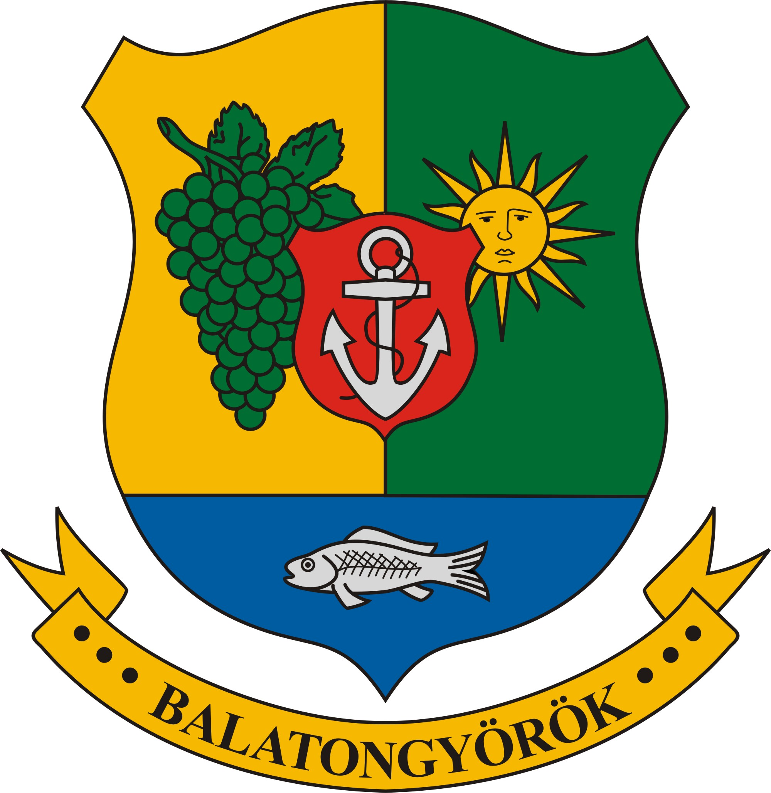

Balatongyörök kilátói
Balatongyörökön szebbnél-szebb helyszíneken 2 kilátó is várja a turistákat.
Batsányi kilátó
| A Pap-hegy csúcsán, az úgynevezett Boncsostetőn található a kilátó, ahonnan páratlan panoráma nyílik a Balaton-felvidékre. 2003-ban a Keszthelyi erdészet rendbe hozta a korábban megrongált kilátót. Megközelíthető a Bélapi pihenőtől vagy a Szépkilátótól a Szerelemdombon keresztül. Vagy a Szépkilátótól induló piros háromszög jelzésen is. | |
| Szélesség | N 46.77717 |
| Hosszúság | E 17.35715 |
| Magasság | 448m |
| Megye/ország | Zala |
| Hegy | Pap-hegy |
Forrás: hazaielmenyek.hu
Bél Mátyás kilátó
| A Garga-hegy tetején található kilátó 1972-ben épült, a keszthelyi erdészet építette. A kilátó kitűnő panorámát nyújt a Tapolcai-medence tanúhegyeire. Ugyancsak kiváló a kilátás a Keszthelyi hegység dimbes-dombos hegyvonulataira, a somogyi partokra, a keszthelyi öbölre. A Keszthelyi-hegység fái között található kilátó környékén egyedi növény-és állatvilág található. | |
| Szélesség | 46.76855 |
| Hosszúság | 17.35227 |
| Magasság | 221m |
| Megye/ország | Zala |
| Hegy | Garga-hegy |
Forrás: hazaielmenyek.hu